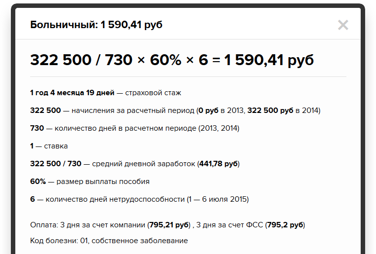
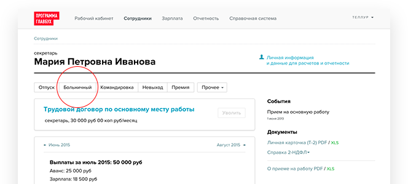
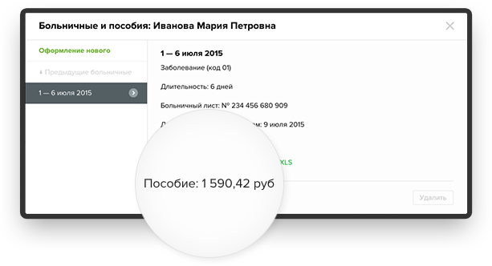
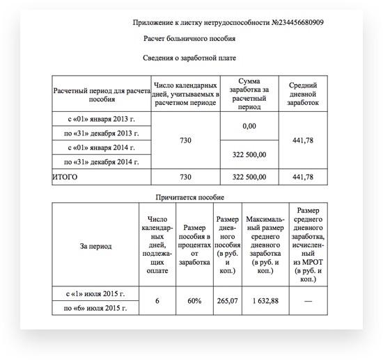
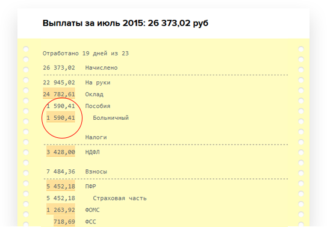

Расчет и оформление
выплат сотрудникам
выплат сотрудникам
Как рассчитать страховой стаж
для больничного листа
Правила расчета стажа с примером. Онлайн-сервис,
который сэкономит время на расчете стажа
и больничного.
который сэкономит время на расчете стажа
и больничного.
От страхового стажа зависит размер больничного пособия:
8 лет стажа и больше — 100%, от 5 до 8 лет — 80%, менее 5 лет — 60%
8 лет стажа и больше — 100%, от 5 до 8 лет — 80%, менее 5 лет — 60%
Страховой стаж
сотрудника
сотрудника
=
Время работы в компании
до даты начала болезни
до даты начала болезни
+
Прошлые периоды занятости
из трудовой книжки
из трудовой книжки
Стаж определяется из расчета полных месяцев и полного года.
Полный месяц — это 30 дней. Полный год — это 12 месяцев.
Пример
Иванова Мария Петровна работает в компании «Кукушка» с 10 февраля 2014. Это ее первое место работы.
С 1 по 6 июля Мария была на больничном.
На 1 июля 2015 года в страховой стаж входит все время работы в компании:
— 1 полный год (12 полных месяцев с марта 2014 по февраль 2015),
— 4 полных месяца (март—июнь 2015),
— 19 дней в 1 неполном месяце (10–28 февраля 2014).
Страховой стаж Марии — 1 год, 4 месяца, 19 дней. Это меньше 5 лет.
При расчете больничного Марии полагается 60% пособия.
Иванова Мария Петровна работает в компании «Кукушка» с 10 февраля 2014. Это ее первое место работы.
С 1 по 6 июля Мария была на больничном.
На 1 июля 2015 года в страховой стаж входит все время работы в компании:
— 1 полный год (12 полных месяцев с марта 2014 по февраль 2015),
— 4 полных месяца (март—июнь 2015),
— 19 дней в 1 неполном месяце (10–28 февраля 2014).
Страховой стаж Марии — 1 год, 4 месяца, 19 дней. Это меньше 5 лет.
При расчете больничного Марии полагается 60% пособия.
Программа Главбух определит
страховой стаж на момент
расчета больничного
Программа сообщит сумму пособия по временной нетрудоспособности сотрудника
и предоставит подробное объяснение расчета. Так же, как в примере

и предоставит подробное объяснение расчета. Так же, как в примере
Программа Главбух рассчитает больничный
за пару секунд
Один раз для всех расчетов указываете данные о сотруднике. Время работы сотрудника
в вашей компании сервис посчитает сам, а по предыдущим местам работы попросит
ввести периоды из трудовой книжки.

в вашей компании сервис посчитает сам, а по предыдущим местам работы попросит
ввести периоды из трудовой книжки.
Программа сообщит сумму пособия
по временной нетрудоспособности сотрудника
по временной нетрудоспособности сотрудника
Вам достаточно ввести данные из больничного листка


Программа Главбух в момент расчета
заполнит нужные документы
заполнит нужные документы
В справке-расчете — вся информация по пособию
Программа перенесет сумму больничного
в расчетный листок сотрудника
в расчетный листок сотрудника
Здесь все выплаты работнику за месяц: больничный, зарплата
за остаток месяца, взносы и НДФЛ. Нажмите на выделенное
оранжевым число, и откроется объяснение расчета.
за остаток месяца, взносы и НДФЛ. Нажмите на выделенное
оранжевым число, и откроется объяснение расчета.

Что еще умеет Программа Главбух

Считать зарплату, командировочные,
больничные и остальные выплаты
больничные и остальные выплаты

Заполнять кадровые документы
в момент расчета
в момент расчета

Начислять НДФЛ, взносы и готовить
отчетность: 4-ФСС, РСВ-1, 2-НДФЛ
отчетность: 4-ФСС, РСВ-1, 2-НДФЛ

Давать рекомендации по зарплатному
и кадровому учету
и кадровому учету